[CGen22x] Refrigeration generation, multiple chillers, chilled water storage tank
Name: [CGen22x] Refrigeration generation, multiple chillers, chilled water storage tank (all options)
Library hierarchy: Plants
Plant operating modes
- Off
- On
Plant diagram
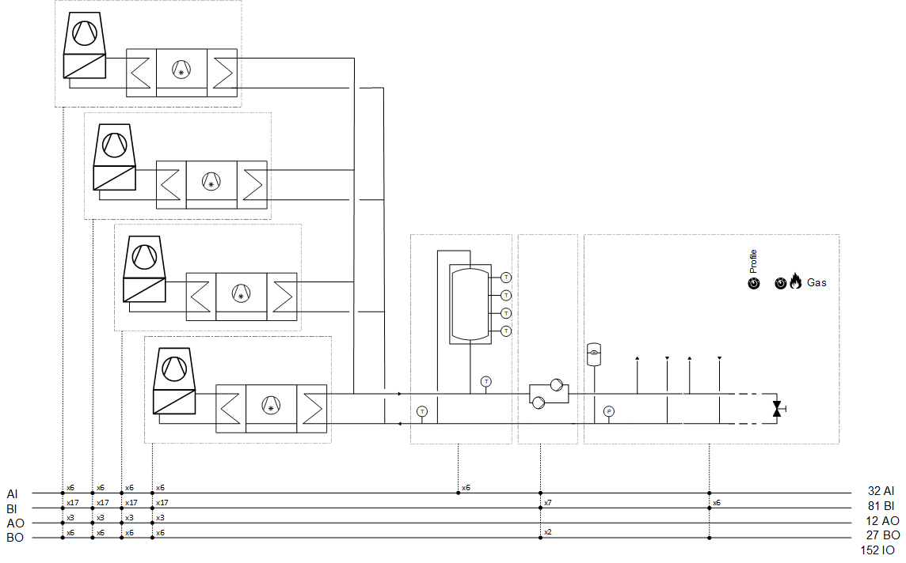
Main functions | Main components |
|---|---|
|
|
Program blocks
Chiller 1 | |
| 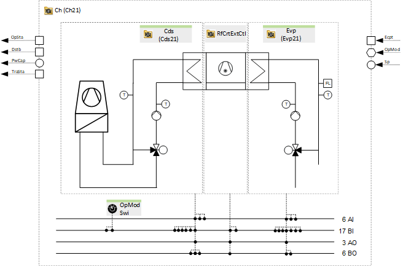 |
Chiller 2 (Optional) | |
| |
Chiller 3 (Optional) | |
| |
Chiller 4 (Optional) | |
| |
Sensors, setpoints and control | |
[CGenCtl22] Sensors, setpoints and control for multiple refrigeration generators | |
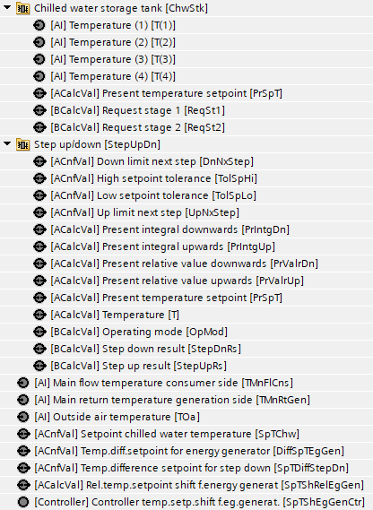 | 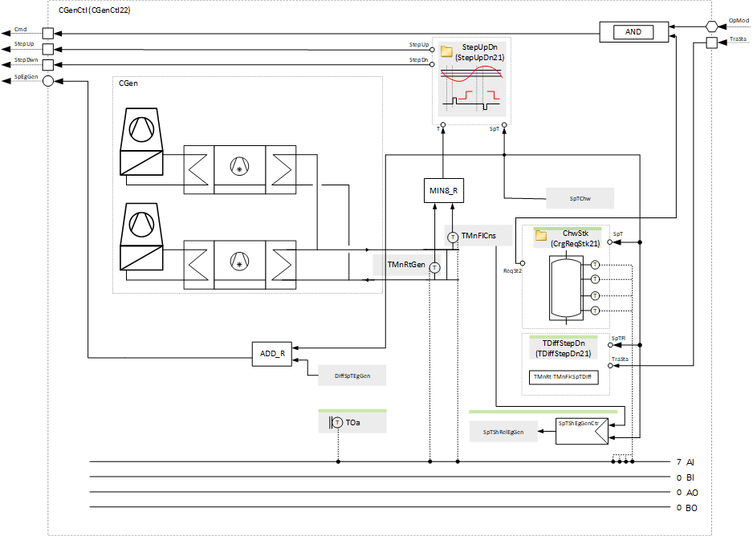 |
Plant operating mode | |
[CGenPltMod21] Plant operating mode determination for refrigeration generation | |
| 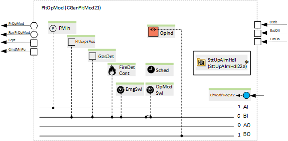 |
Profile determination | |
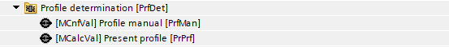 | 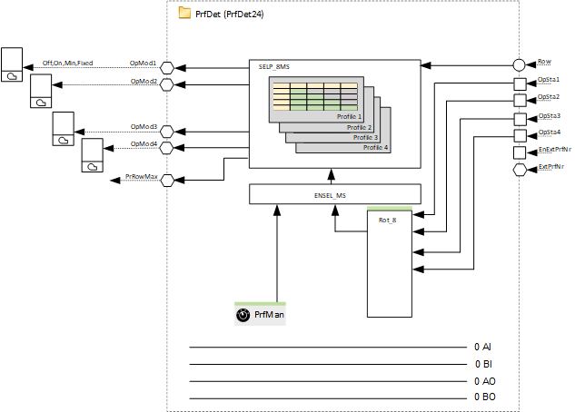 |
Main pump group | |
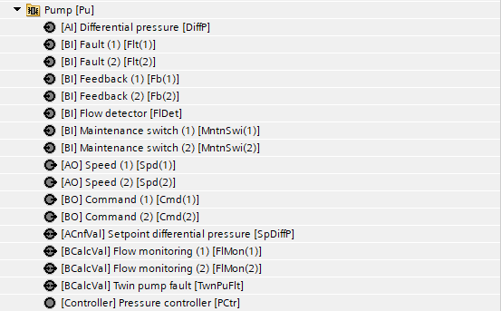 | 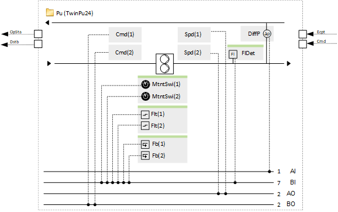 |
Supply chain for chilled water (Optional) | |
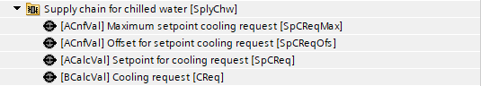 |
|
Supply chain for cooling water, outgoing (Optional) | |
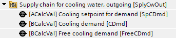 | 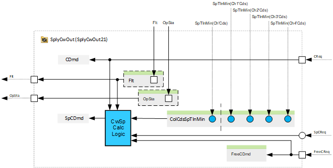 |
Free cooling determination (Optional) | |
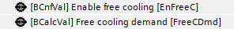 | 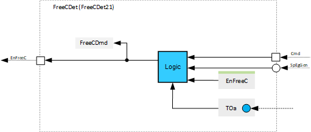 |